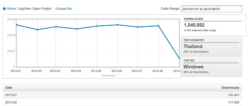
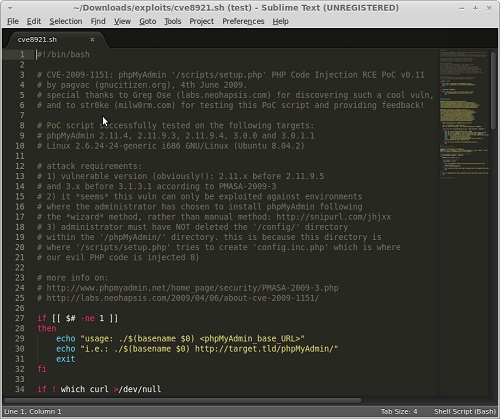
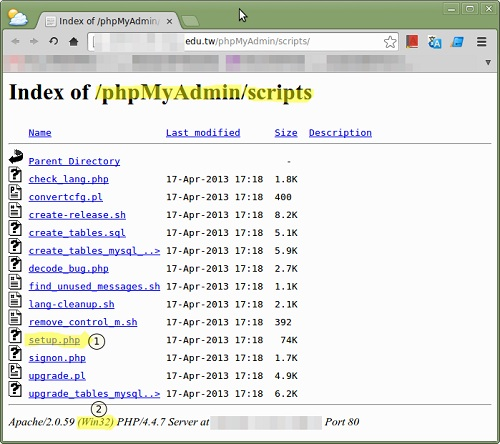
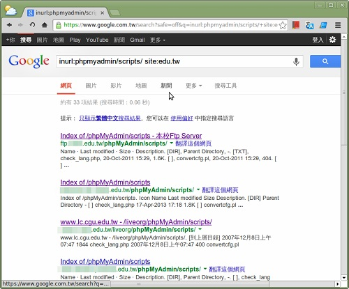
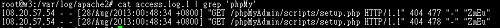
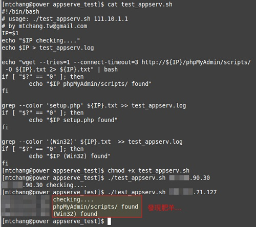

也紀念我們永遠的朋友 李士傑先生（Shih-Chieh Ilya Li）。
AppServ 懶人包的資安問題與檢測
AppServ 是一個 Windows 下很成功的懶人包專案，它把 Apache 、PHP、MySQL 以及 phpMyAdmin 整合打包成為一個安裝檔案，對於入門的程式開發人員很方便。也因為它在 2006 年就推出所以到現在仍是下載率很高的專案，每個月約有 10 萬次下載。

▲ 圖 1：AppServ 每月下載次數
但是問題就在這裡，它目前的版本為 2008.5.10 的版本，作者已經有 5年多沒有更新了，但是還是有那麼多人下載使用。
在 2009 , 2010 有很多 phpMyAdmin 的漏洞陸續被公開，以 CVE-2009-1151 為例，它說明在 phpMyAdmin 的 setup.php 程式中有個程式碼可以寫入檔案的漏洞存在。如果找一下還會發現已經有人將它寫成自動化入侵的工具程式。

▲ 圖 2：CVE-2009-1151自動化入侵工具
如果知道漏洞存在並補強其實不會造成什麼問題，但問題在於使用 AppServ 的大多為初學者或對於系統程式不熟悉的使用者，只求網站能工作不會注意這些細節的問題。如果你用 google 的 inurl + site + intext 搭配搜尋你會發現真的很多人不在意，且甚至把這個網站它放到公開的網路上工作。關鍵字：「phpmyadmin scripts setup.php win32」

▲ 圖 3：google「inurl:phpmyadmin/scripts/ site:edu.tw」

▲ 圖 4：沒有保護的 scripts 目錄，透過 google 就可找到
在 2013 年 5 月的時候 TACERT 已經針對這部份的入侵細節做了一份攻擊行為的分析報告，攻擊者針對這部份的目的性是對於安裝 AppServ 的主機植入 IRC BOT 並控制該主機成為殭屍網路的一部分。
如果稍微有些概念的話你會發現，每月 AppServ 懶人包 10 萬的下載量轉換為殭屍網路主機如果有 1% 轉換成功的話那就是 1000 台主機，所以只要夠過 AppServ 的漏洞幾個月內就可入侵控制數萬台以上的主機，屆時如需要發動網路攻擊也就非常的容易。

▲ 圖 5：robot 掃描主機的漏洞紀錄
所以你也可以寫個程式掃描你所在的網路，看是否有人在使用 AppServ 。底下是我寫的小工具檢測 phpmyadmin/scripts 網址是否存在、setup.php 是否存在以及是否為 Win32 主機，用來檢測我的網路有沒有這種「肥羊」主機的存在。程式碼可以由 github 取得，使用說明在這裡。

▲ 圖 6：AppServ 檢測程式
所以這裡要請大家幫忙的是不要在教學上使用 AppServ 了，目前國內的資管、資工科系在網站教學課程上面很多是使用 AppServ 當作教學練習的工具，且根據我的經驗發現研究生、博士生也很多是用 AppServ 架設網站收集研究資料，顯示該套件已經被很多人接受不易改變。
▲ 圖 7：網路上的 AppServ 教學文件
另外對於初學者 AppServ 的替代方案可以使用 WampServer 或是 XAMPP ，這些活躍的懶人包套件專案，如果網站是放到公開網路上更是需要注意安全性的細節。
當然，最好的方法是請官方網站的維護者更新修正，我想它可能有聽到所以在 2013 年 5 月 7 日進行專案更新，但我看了之後發現有點怪怪的這個檔案是 2007 年 7 月 25 日就已經發佈的檔案且沒有更新任何新的內容，但是 sourceforge 的時間看起來是最新版了。詳細案情就有請各位鍵盤柯南幫忙找找原因了。

▲ 圖 8：目前 sourceforge 上面的 AppServ 專案 Summary 頁面
以上是因為在今年 5 月後我管理的網路內的使用者因為 AppServ 所造成的電腦問題及網路問題十分的頻繁，有表現出來的外顯症狀為網路開機速度很慢，因為被入侵的主機在開機的時候不斷的重製 IRC 程式並寫入 Windows 註冊表，當然各種入侵的方式不一樣，但都是由 AppServ 懶人包漏洞延伸而來的。另一種是當成網路 Server 不常登入，使用一點都不感覺他有異狀只是成為 DDOS 攻擊別人的一份子，較糟糕的狀況是引發起另外一團殭屍網路的攻擊，造成整個組織的網路湧入大量的垃圾封包影響所有的網路服務。
參考網址：
◎作者簡介：mtchang，快要只剩一張嘴的資訊人員，因為已經沒有 18 歲青春的肉體及新鮮的肝，正努力的進入中年大叔的轉型期。
技能：Linux、網路管理、自由軟體解決方案。
BLOG：八克里
Special


Address：No.128, Sec.2, Academia Rd., Institute of Information Science, Academia Sinica, Nangang District, Taipei City 11529, Taiwan (R.O.C).
Privacy Policy. Terms-of-use

Comments